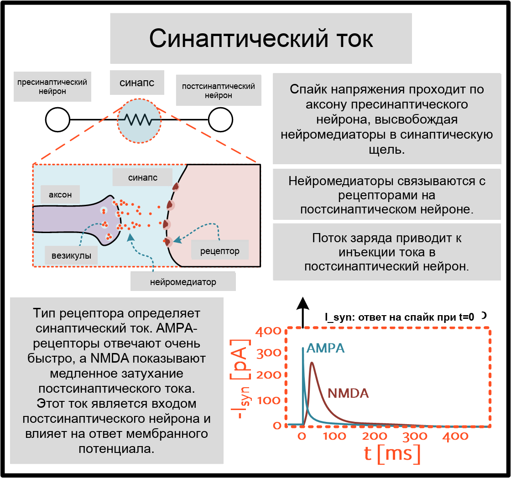
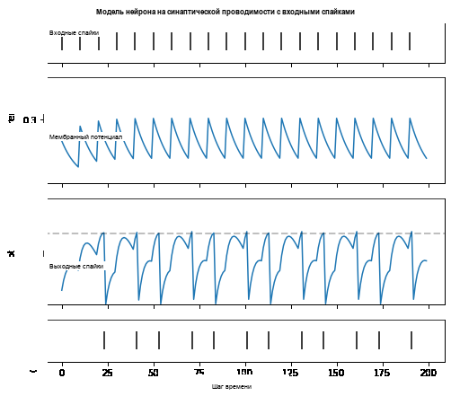
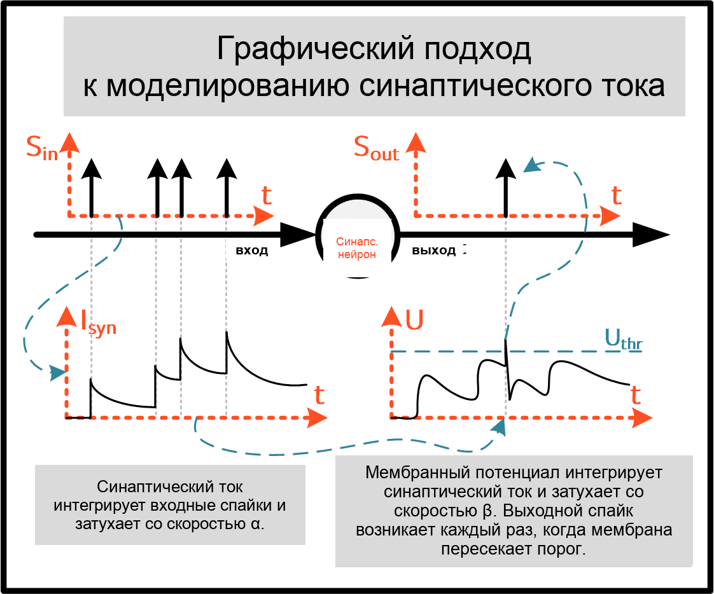
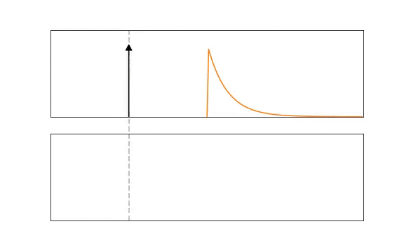
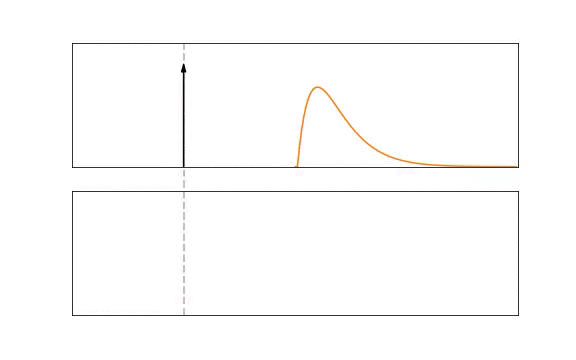
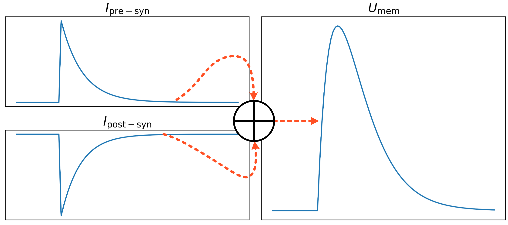
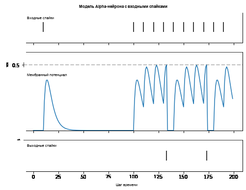

Русский перевод. Неофициальный перевод актуальной документации snnTorch latest (0.9.4). Оригинал: https://snntorch.readthedocs.io/en/latest/. Документация распространяется по лицензии CC BY-SA 3.0.
Учебник 4 - Модели спайковых нейронов второго порядка
Учебное пособие написано Джейсоном К. Эшрагианом (www.ncg.ucsc.edu)

Серия учебных пособий snnTorch основана на следующей статье. Если вы считаете эти ресурсы или код полезными в своей работе, пожалуйста, укажите следующий источник:
Примечание
- Этот учебник является статической нередактируемой версией. Интерактивные редактируемые версии доступны по следующим ссылкам:
Введение
В этом руководстве вы:
Узнайте о более продвинутых моделях нейронов с утечкой и интеграцией и срабатыванием (LIF), имеющихся в распоряжении:
SynapticиAlpha
Установите последнюю версию дистрибутива snnTorch из PyPi.
$ pip install snntorch
# imports
import snntorch as snn
from snntorch import spikeplot as splt
from snntorch import spikegen
import torch
import torch.nn as nn
import matplotlib.pyplot as plt
1. Модель LIF-нейрона на основе синаптической проводимости
Модели нейронов, рассмотренные в предыдущих учебных пособиях, предполагают, что входной потенциал действия вызывает мгновенный скачок синаптического тока, который затем влияет на мембранный потенциал. В действительности, потенциал действия приводит к постепенному высвобождению нейротрансмиттеров из пресинаптического нейрона в постсинаптический нейрон. Модель LIF на основе синаптической проводимости учитывает постепенную временную динамику входного тока.
1.1 Моделирование синаптического тока
Если пресинаптический нейрон возбуждается, потенциал действия передается по аксону нейрона. Он вызывает высвобождение нейротрансмиттеров из везикул в синаптическую щель. Те активируют постсинаптические рецепторы, которые напрямую влияют на эффективный ток, протекающий в постсинаптический нейрон. Ниже показаны два типа возбуждающих рецепторов: AMPA и NMDA.
{kind=link}

Простейшая модель синаптического тока предполагает нарастание тока за очень короткое время, за которым следует относительно медленный экспоненциальный спад, как показано в ответе рецептора AMPA выше. Это очень похоже на динамику мембранного потенциала модели Лапика.
Синаптическая модель содержит два экспоненциально затухающих члена: \(I_{\rm syn}(t)\) и \(U_{\rm mem}(t)\). Отношение между последующими членами (т.е. скорость затухания) для \(I_{\rm syn}(t)\) установлено равным \(\alpha\), а для \(U(t)\) установлено равным \(\beta\):
где длительность одного временного шага нормирована на \(\Delta t = 1\) в будущем. \(\tau_{\rm syn}\) моделирует постоянную времени синаптического тока аналогично тому, как \(\tau_{\rm mem}\) моделирует постоянную времени мембранного потенциала. \(\beta\) выводится точно так же, как в предыдущем учебном пособии, с аналогичным подходом к \(\alpha\):
Те же условия для возникновения потенциала действия, что и для предыдущих LIF-нейронов, остаются в силе:
1.2 Модель синаптического нейрона в snnTorch
Модель нейрона на основе синаптической проводимости объединяет динамику синаптического тока с пассивной мембраной. Она должна быть создана с двумя входными аргументами:
\(\alpha\): коэффициент затухания синаптического тока
\(\beta\): коэффициент затухания мембранного потенциала (как у Лапика)
# Temporal dynamics
alpha = 0.9
beta = 0.8
num_steps = 200
# Initialize 2nd-order LIF neuron
lif1 = snn.Synaptic(alpha=alpha, beta=beta)
Использование этого нейрона точно такое же, как у предыдущих LIF-нейронов, но теперь
с добавлением синаптического тока syn в качестве входа и выхода:
Входы
spk_in: каждый взвешенный входной потенциал действия \(WX[t]\) последовательно передается вsyn: синаптический ток \(I_{\rm syn}[t-1]\) на предыдущем временном шагеmem: мембранный потенциал \(U[t-1]\) на предыдущем временном шаге
Выходы
spk_out: выходной спайк \(S[t]\) (‘1’ если есть спайк; ‘0’ если спайка нет)syn: синаптический ток \(I_{\rm syn}[t]\) на текущем временном шагеmem: мембранный потенциал \(U[t]\) на текущем временном шаге
Все они должны быть типа torch.Tensor. Обратите внимание, что модель
нейрона сдвинута во времени на один шаг назад без потери общности.
Примените периодический входной потенциал действия, чтобы увидеть, как ток и мембрана изменяются со временем:
# Periodic spiking input, spk_in = 0.2 V
w = 0.2
spk_period = torch.cat((torch.ones(1)*w, torch.zeros(9)), 0)
spk_in = spk_period.repeat(20)
# Initialize hidden states and output
syn, mem = lif1.init_synaptic()
spk_out = torch.zeros(1)
syn_rec = []
mem_rec = []
spk_rec = []
# Simulate neurons
for step in range(num_steps):
spk_out, syn, mem = lif1(spk_in[step], syn, mem)
spk_rec.append(spk_out)
syn_rec.append(syn)
mem_rec.append(mem)
# convert lists to tensors
spk_rec = torch.stack(spk_rec)
syn_rec = torch.stack(syn_rec)
mem_rec = torch.stack(mem_rec)
plot_spk_cur_mem_spk(spk_in, syn_rec, mem_rec, spk_rec,
"Synaptic Conductance-based Neuron Model With Input Spikes")
{kind=link}

Эта модель также имеет необязательные входные аргументы reset_mechanism
и threshold как описано для модели нейрона Лапика. В итоге,
каждый потенциал действия вносит сдвинутый экспоненциальный спад в синаптический
ток \(I_{\rm syn}\), которые все суммируются вместе. Этот ток
затем интегрируется уравнением пассивной мембраны, выведенным в
Учебное пособие 2, таким образом генерируя выходные потенциалы действия. Иллюстрация этого
процесса приведена ниже.
{kind=link}

1.3 Нейроны 1-го порядка vs. 2-го порядка
Естественный вопрос, который возникает: – когда мне следует использовать LIF-нейрон первого порядка, а когда – LIF-нейрон второго порядка? Хотя этот вопрос окончательно не решён, мои собственные эксперименты дали мне некоторую интуицию, которая может быть полезна.
Когда нейроны второго порядка лучше
Если временные соотношения ваших входных данных происходят на длительных временных масштабах,
или если шаблон входных спайков разреженный
Благодаря двум рекуррентным уравнениям с двумя слагаемыми затухания (\(\alpha\) и \(\beta\)), эта модель нейрона способна «удерживать» входные спайки в течение более длительного времени. Это может быть полезно для сохранения долгосрочных связей.
Альтернативный вариант использования также может быть:
Когда имеют значение временные коды
Если вас интересует точное время спайка, кажется, что легче
контролировать это для нейрона второго порядка. В Leaky модели спайк
будет запускаться в прямой синхронии с входом. Для моделей
второго порядка мембранный потенциал «размывается» (т.е. модель
синаптического тока низкочастотно фильтрует мембранный потенциал), что означает, что можно
использовать конечное время нарастания для \(U[t]\). Это видно из
предыдущего моделирования, где выходные спайки испытывают задержку относительно
входных спайков.
Когда нейроны первого порядка лучше
Любой случай, который не подпадает под вышеперечисленные, а иногда и вышеперечисленные случаи.
Имея на одно уравнение меньше в моделях нейронов первого порядка (таких как
Leaky), процесс обратного распространения становится немного проще. Тем не менее,
сказав это, Synaptic модель функционально эквивалентна
модели Leaky модели для \(\alpha=0.\) В моих собственных поисках гиперпараметров
на простых наборах данных оптимальные результаты, похоже, подталкивают
\(\alpha\) как можно ближе к 0. По мере увеличения сложности
данных, \(\alpha\) может увеличиваться.
2. Модель альфа-нейрона (модифицированная модель ответа на спайк)
Рекурсивная версия модели ответа на спайк (SRM), или «альфа»-нейрон,
также доступна, вызывается с помощью snn.Alpha. Модели нейронов
до сих пор основывались на пассивной модели мембраны, используя
обыкновенные дифференциальные уравнения для описания их динамики.
Семейство моделей SRM, с другой стороны, интерпретируется в терминах фильтра. При поступлении входного спайка этот спайк свертывается с фильтром, чтобы получить отклик мембранного потенциала. Форма этого фильтра может быть экспоненциальной, как в случае с нейроном Лапика, или более сложной, например, суммой экспонент. Модели SRM привлекательны тем, что они могут произвольно добавлять рефрактерность, адаптацию порога и любое количество других функций, просто встраивая их в фильтр.
{kind=link}

{kind=link}

2.1 Моделирование модели альфа-нейрона
Формально этот процесс описывается:
где входящие спайки \(S_{\rm in}\) свертываются с ядром ответа на спайк \(\epsilon( \cdot )\). Отклик на спайк масштабируется синаптическим весом, \(W\). На верхнем рисунке ядро является экспоненциально затухающей функцией и было бы эквивалентно модели нейрона первого порядка Лапика. Внизу ядро является альфа-функцией:
где \(\tau\) — постоянная времени альфа-ядра, а \(\Theta\) — ступенчатая функция Хевисайда. Большинство методов на основе ядра принимают альфа-функцию, поскольку она обеспечивает временную задержку, полезную для временных кодов, которые связаны с указанием точного времени спайка нейрона.
В snnTorch модель ответа на спайк не реализована напрямую как фильтр. Вместо этого она преобразована в рекурсивную форму, такую, что для расчета следующего набора значений требуются только значения предыдущего временного шага. Это уменьшает требуемый объем памяти.
{kind=link}

Поскольку мембранный потенциал теперь определяется суммой двух экспонент, каждая из этих экспонент имеет свою собственную независимую скорость затухания. \(\alpha\) определяет скорость затухания положительной экспоненты, а \(\beta\) определяет скорость затухания отрицательной экспоненты.
alpha = 0.8
beta = 0.7
# initialize neuron
lif2 = snn.Alpha(alpha=alpha, beta=beta, threshold=0.5)
Использование этого нейрона аналогично предыдущим нейронам, но сумма
двух экспоненциальных функций требует, чтобы синаптический ток syn был
разделён на syn_exc и syn_inh компонент:
Входы
spk_in: каждый взвешенный входной потенциал действия \(WX[t]\) последовательно передается вsyn_exc: возбуждающий постсинаптический ток \(I_{\rm syn-exc}[t-1]\) на предыдущем временном шагеsyn_inh: тормозный постсинаптический ток \(I_{\rm syn-inh}[t-1]\) на предыдущем временном шагеmem: мембранный потенциал \(U_{\rm mem}[t-1]\) в текущий момент времени \(t\) на предыдущем временном шаге
Выходы
spk_out: выходной спайк \(S_{\rm out}[t]\) на текущем временном шаге (‘1’ если есть спайк; ‘0’ если спайка нет)syn_exc: возбуждающий постсинаптический \(I_{\rm syn-exc}[t]\) на текущем временном шаге \(t\)syn_inh: тормозный постсинаптический ток \(I_{\rm syn-inh}[t]\) на текущем временном шаге \(t\)mem: мембранный потенциал \(U_{\rm mem}[t]\) на текущем временном шаге
Как и все другие модели нейронов, они должны быть типа torch.Tensor.
# input spike: initial spike, and then period spiking
w = 0.85
spk_in = (torch.cat((torch.zeros(10), torch.ones(1), torch.zeros(89),
(torch.cat((torch.ones(1), torch.zeros(9)),0).repeat(10))), 0) * w).unsqueeze(1)
# initialize parameters
syn_exc, syn_inh, mem = lif2.init_alpha()
mem_rec = []
spk_rec = []
# run simulation
for step in range(num_steps):
spk_out, syn_exc, syn_inh, mem = lif2(spk_in[step], syn_exc, syn_inh, mem)
mem_rec.append(mem.squeeze(0))
spk_rec.append(spk_out.squeeze(0))
# convert lists to tensors
mem_rec = torch.stack(mem_rec)
spk_rec = torch.stack(spk_rec)
plot_spk_mem_spk(spk_in, mem_rec, spk_rec, "Alpha Neuron Model With Input Spikes")
{kind=link}

Как и модели Lapicque и Synaptic, модель Alpha также имеет опции для изменения порога и механизма сброса.
2.2 Практические соображения
Как упоминалось для нейрона Synaptic, чем сложнее модель, тем сложнее процесс обратного распространения во время обучения. В моих собственных экспериментах мне ещё не встречался случай, когда нейрон Alpha превосходил модели нейронов Synaptic и Leaky. Кажется, что обучение через положительную и отрицательную экспоненты только усложняет процесс вычисления градиента и сводит на нет любые потенциальные преимущества более сложной нейронной динамики.
Однако, когда модель SRM выражается как зависящее от времени ядро (а не рекурсивная модель, как здесь), она, кажется, работает так же хорошо, как и более простые модели нейронов. В качестве примера см. следующую статью:
Нейрон Alpha был включен с целью предоставления возможности переноса моделей на основе SRM в snnTorch, хотя родное обучение им, кажется, не слишком эффективно в snnTorch.
Заключение
Мы рассмотрели все модели нейронов LIF, доступные в snnTorch. Вкратце:
Lapicque: физически точная модель, основанная непосредственно на параметрах RC-цепи
Leaky: упрощённая модель первого порядка
Synaptic: модель второго порядка, учитывающая эволюцию синаптического тока
Alpha: модель второго порядка, в которой мембранный потенциал отслеживает альфа-функцию
В целом, Leaky и Synaptic кажутся наиболее полезными для
обучения сети. Lapicque хорошо подходит для демонстрации физически
точных моделей, в то время как Alpha предназначена только для захвата
поведения нейронов SRM.
Построение сети с использованием этих немного более продвинутых нейронов следует точной такой же процедуре, как в Учебное пособие 3.
Если вам нравится этот проект, пожалуйста, рассмотрите возможность поставить звезду ⭐ репозиторию на GitHub, так как это самый простой и лучший способ поддержать его.
Для справки, документация может быть найдена здесь.
Дальнейшее чтение
snnTorch документация моделей Lapicque, Leaky, Synaptic и Alpha
Нейронная динамика: от одиночных нейронов до сетей и моделей познания от Вульфрама Герстнера, Вернера М. Кистлера, Ричарда Науда и Лиама Панински.
Теоретическая нейронаука: вычислительное и математическое моделирование нейронных систем от Лоуренса Ф. Эбботта и Питера Даяна